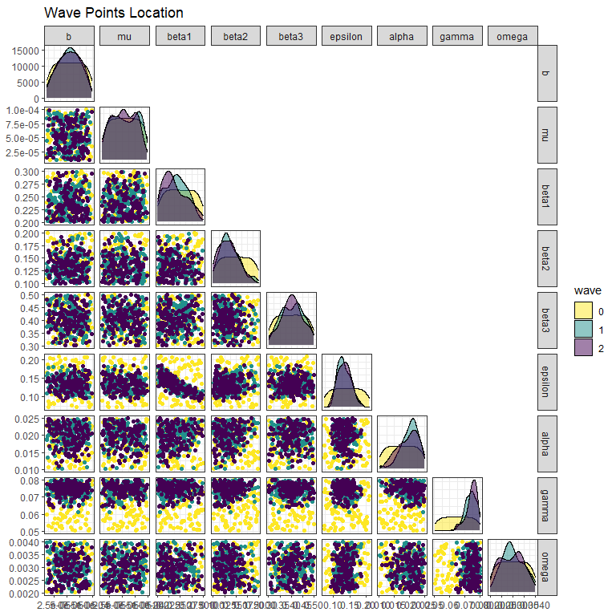
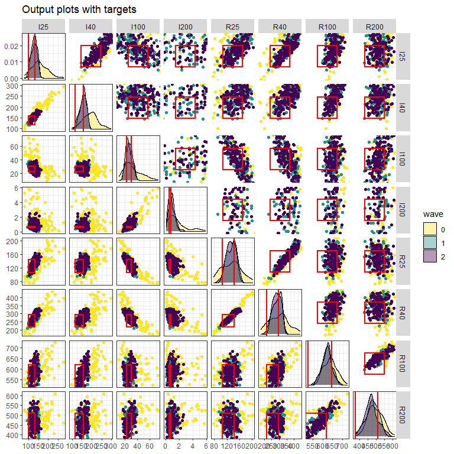

10 Visualisation of the non-implausible space by wave
In this last section we present three visualisations that can be used to compare the non-implausible space identified at different waves of the process.
The first visualisation, obtained through the function wave_points, shows the distribution of the non-implausible space for the waves of interest. For example, let us plot the distribution of five of the parameter sets at the beginning, at the end of wave one and at the end of wave two:
wave_points(list(initial_points, new_points, new_new_points),
input_names = names(ranges)[c(2,3,6,8,9)]) +
ggplot2::theme(axis.text.x = ggplot2::element_text(size = 6))
Here we can easily see that the distributions of the second and third wave points are more narrow than those of the first wave.
The second visualisation allows us to assess how much better parameter sets at later waves perform compared to the original initial_points.
In this workshop we assume that for a given parameter set \(x\), we are interested in matching the mean of the stochastic model to the observed data, rather than in the output of each realisation at \(x\), which will be dealt with in future versions. For this reason, we will use the helper function aggregate_points, which calculates the mean of each output across different realisations.
all_training_aggregated <- aggregate_points(all_training, names(ranges))
new_all_training_aggregated <- aggregate_points(new_all_training, names(ranges))
new_new_all_training_aggregated <- aggregate_points(new_new_all_training, names(ranges))
all_aggregated <- list(all_training_aggregated, new_all_training_aggregated,
new_new_all_training_aggregated)We are now ready to compare the performance of parameter sets at the end of each wave, passing the list all_aggregated and the list targets to the function simulator_plot:
simulator_plot(all_aggregated, targets, barcol = "grey")Note that in this call we set barcol="grey" in order to have the target intervals in white, instead of black. This plot clearly shows that parameter sets at the end of the first and second wave perform better than the initial set of points.
In the third visualisation, output values for non-implausible parameter sets at each wave are shown for each combination of two outputs:
wave_values(all_aggregated, targets, l_wid=1) 
The argument l_wid is optional and helps customise the width of the red lines that create the target boxes. The main diagonal shows the distribution of each output at the end of each wave, with the vertical red lines indicating the lower and upper bounds of the target. Above and below the main diagonal are plots for each pair of targets, with rectangles indicating the target area where full fitting points should lie (the ranges are normalised in the figures above the diagonals). These graphs can provide additional information on output distributions, such as correlations between them. For example, here we see positive correlations between \(I25\) and \(R40\).
In this workshop we have shown how to perform the first three waves of the history matching process on a stochastic model. Of course, more waves are required, in order to complete the calibration task.
Below we run the model on the points provided by the second wave of history matching:
new_new_results <- list()
with_progress({
p <- progressor(nrow(initial_points))
for (i in 1:nrow(new_new_points)) {
model_out <- get_results(unlist(new_new_points[i,]), nreps = 100, outs = c("I", "R"),
times = c(25, 40, 100, 200))
new_new_results[[i]] <- model_out
p(message = sprintf("Run %g", i))
}
})
wave2 <- data.frame(do.call('rbind', new_new_results))
new_new_all_training <- wave2[1:10000,]